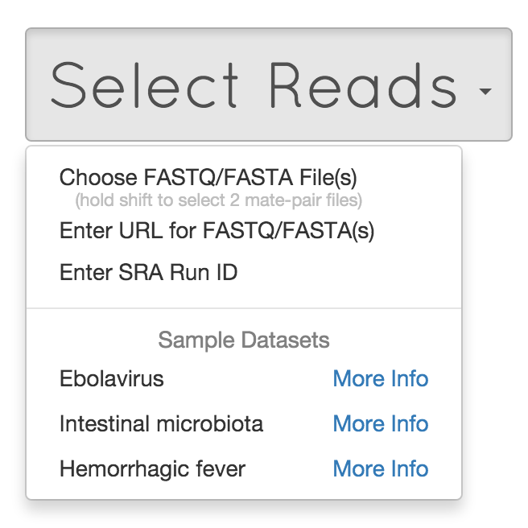
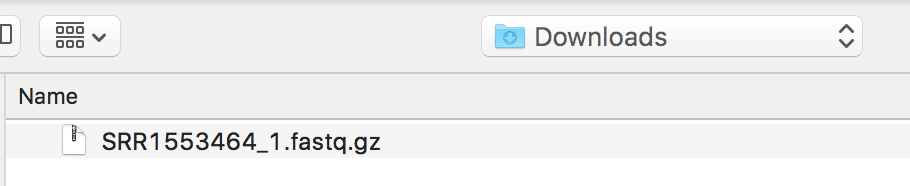
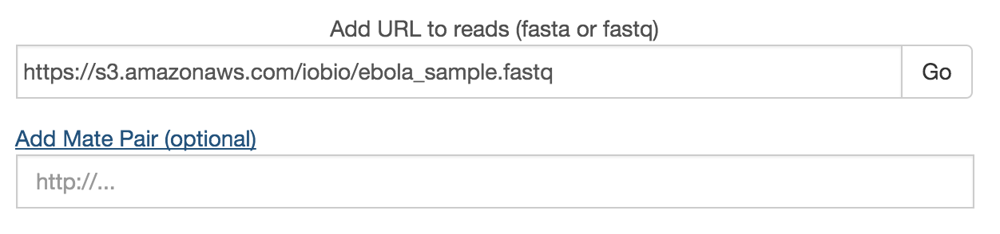
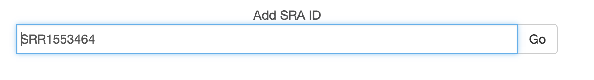

Fastq files for analysis at Taxonomer.iobio.io can be provided in three ways (see below). Analysis stops once a set amount of data is analyzed. Therefore, the absolute number of reads analyzed changes with read length (i.e. analysis will end after a larger number of shorter reads and a smaller number of longer reads).


Unzipped fastq files can be streamed from any local drive as long as the user’s internet connection has sufficient upload speeds. For analysis of paired-end data, hold shift to select 2 fastq files.

Unzipped fastq files can be streamed from cloud storage such as AWS S3 (https://aws.amazon.com/s3/). This is the recommended option if internet upload speeds are limited. Other cloud storage options such as Dropbox, Box, and Google Drive will be supported with future updates.

Fastq files deposited into the NCBI SRA can be streamed directly. By entering the NCBI SRR accession number.